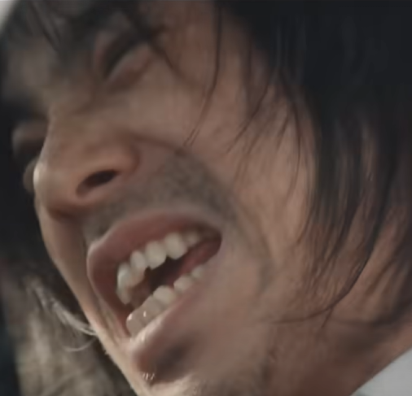

王晴右
我是一名熱衷設計與互動技術整合的創作者。我擅長將程式與視覺設計結合，透過網頁、遊戲與平面作品，傳達主題與情感。我的作品橫跨 Unity 遊戲、Phaser 小遊戲、網頁與主題式平面設計，通常負責程式方面，注重細節與一致性。我相信設計不只是美觀，更是與人對話的媒介，希望透過創作讓觀者產生共鳴，也讓自己持續成長。
我是一名熱衷設計與互動技術整合的創作者。我擅長將程式與視覺設計結合，透過網頁、遊戲與平面作品，傳達主題與情感。我的作品橫跨 Unity 遊戲、Phaser 小遊戲、網頁與主題式平面設計，通常負責程式方面，注重細節與一致性。我相信設計不只是美觀，更是與人對話的媒介，希望透過創作讓觀者產生共鳴，也讓自己持續成長。